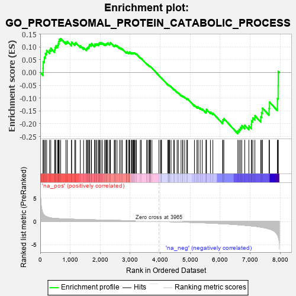
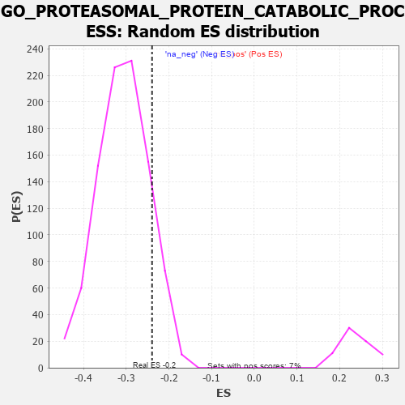

| | | Dataset | 7d |
| Phenotype | NoPhenotypeAvailable |
| Upregulated in class | na_neg |
| GeneSet | GO_PROTEASOMAL_PROTEIN_CATABOLIC_PROCESS |
| Enrichment Score (ES) | -0.2394554 |
| Normalized Enrichment Score (NES) | -0.77949154 |
| Nominal p-value | 0.8751345 |
| FDR q-value | 0.9940393 |
| FWER p-Value | 1.0 |
Table: GSEA Results Summary

Fig 1: Enrichment plot: GO_PROTEASOMAL_PROTEIN_CATABOLIC_PROCESS
Profile of the Running ES Score & Positions of GeneSet Members on the Rank Ordered List
| PROBE | GENE SYMBOL | GENE_TITLE | RANK IN GENE LIST | RANK METRIC SCORE | RUNNING ES | CORE ENRICHMENT | | 1 | UBE2K | | | 94 | 1.739 | 0.0166 | No |
| 2 | TRIM2 | | | 100 | 1.628 | 0.0427 | No |
| 3 | DESI1 | | | 138 | 1.332 | 0.0599 | No |
| 4 | BUB3 | | | 172 | 1.143 | 0.0744 | No |
| 5 | SPSB4 | | | 214 | 1.019 | 0.0859 | No |
| 6 | JKAMP | | | 310 | 0.804 | 0.0870 | No |
| 7 | GSK3A | | | 351 | 0.745 | 0.0942 | No |
| 8 | CDC20 | | | 480 | 0.644 | 0.0884 | No |
| 9 | SPSB1 | | | 494 | 0.631 | 0.0971 | No |
| 10 | GET4 | | | 520 | 0.623 | 0.1042 | No |
| 11 | CCNB1 | | | 581 | 0.601 | 0.1064 | No |
| 12 | FBXW8 | | | 601 | 0.594 | 0.1137 | No |
| 13 | NEMF | | | 620 | 0.589 | 0.1211 | No |
| 14 | GLMN | | | 632 | 0.583 | 0.1293 | No |
| 15 | FAF2 | | | 680 | 0.566 | 0.1326 | No |
| 16 | AMFR | | | 856 | 0.518 | 0.1188 | No |
| 17 | TMTC3 | | | 903 | 0.506 | 0.1212 | No |
| 18 | AKT1 | | | 1040 | 0.476 | 0.1117 | No |
| 19 | TAF9 | | | 1046 | 0.475 | 0.1188 | No |
| 20 | PSMD7 | | | 1152 | 0.454 | 0.1129 | No |
| 21 | PSMD2 | | | 1181 | 0.450 | 0.1167 | No |
| 22 | UBR2 | | | 1334 | 0.423 | 0.1043 | No |
| 23 | RBX1 | | | 1445 | 0.401 | 0.0968 | No |
| 24 | SCO1 | | | 1536 | 0.385 | 0.0917 | No |
| 25 | SOCS6 | | | 1560 | 0.381 | 0.0950 | No |
| 26 | CDC27 | | | 1585 | 0.377 | 0.0981 | No |
| 27 | N4BP1 | | | 1622 | 0.370 | 0.0996 | No |
| 28 | DERL2 | | | 1632 | 0.368 | 0.1045 | No |
| 29 | DDB1 | | | 1642 | 0.366 | 0.1094 | No |
| 30 | ERCC8 | | | 1699 | 0.357 | 0.1081 | No |
| 31 | ZNRF1 | | | 1709 | 0.355 | 0.1128 | No |
| 32 | PSMD4 | | | 1811 | 0.335 | 0.1054 | No |
| 33 | FMR1 | | | 1816 | 0.334 | 0.1104 | No |
| 34 | PSMD6 | | | 1858 | 0.326 | 0.1105 | No |
| 35 | CUL3 | | | 1893 | 0.321 | 0.1115 | No |
| 36 | CUL5 | | | 1947 | 0.314 | 0.1099 | No |
| 37 | ARMC8 | | | 1961 | 0.312 | 0.1133 | No |
| 38 | BRSK2 | | | 1979 | 0.308 | 0.1162 | No |
| 39 | UBXN6 | | | 2021 | 0.302 | 0.1159 | No |
| 40 | TMUB2 | | | 2070 | 0.295 | 0.1147 | No |
| 41 | PSME4 | | | 2143 | 0.285 | 0.1102 | No |
| 42 | UBE2A | | | 2183 | 0.278 | 0.1098 | No |
| 43 | HM13 | | | 2205 | 0.276 | 0.1116 | No |
| 44 | CDK2 | | | 2226 | 0.272 | 0.1135 | No |
| 45 | PSMF1 | | | 2251 | 0.268 | 0.1149 | No |
| 46 | UBE4B | | | 2313 | 0.258 | 0.1113 | No |
| 47 | TMUB1 | | | 2326 | 0.257 | 0.1140 | No |
| 48 | FAF1 | | | 2340 | 0.255 | 0.1166 | No |
| 49 | UBXN1 | | | 2467 | 0.232 | 0.1043 | No |
| 50 | UBAC2 | | | 2488 | 0.229 | 0.1055 | No |
| 51 | HUWE1 | | | 2506 | 0.225 | 0.1070 | No |
| 52 | PSMD5 | | | 2560 | 0.218 | 0.1039 | No |
| 53 | KAT5 | | | 2644 | 0.206 | 0.0967 | No |
| 54 | DDI2 | | | 2691 | 0.200 | 0.0941 | No |
| 55 | CUL1 | | | 2735 | 0.193 | 0.0918 | No |
| 56 | UCHL5 | | | 2864 | 0.172 | 0.0783 | No |
| 57 | CUL2 | | | 2882 | 0.169 | 0.0789 | No |
| 58 | MTM1 | | | 2893 | 0.168 | 0.0804 | No |
| 59 | SOCS4 | | | 2953 | 0.157 | 0.0754 | No |
| 60 | XPO1 | | | 2960 | 0.156 | 0.0772 | No |
| 61 | GID8 | | | 2978 | 0.153 | 0.0776 | No |
| 62 | UBE2S | | | 2980 | 0.153 | 0.0799 | No |
| 63 | UFL1 | | | 3041 | 0.144 | 0.0746 | No |
| 64 | MAEA | | | 3048 | 0.143 | 0.0762 | No |
| 65 | KEAP1 | | | 3063 | 0.141 | 0.0768 | No |
| 66 | CUL4A | | | 3097 | 0.137 | 0.0748 | No |
| 67 | GPX1 | | | 3109 | 0.135 | 0.0756 | No |
| 68 | WWP1 | | | 3127 | 0.133 | 0.0756 | No |
| 69 | EDEM2 | | | 3145 | 0.131 | 0.0756 | No |
| 70 | PSMD9 | | | 3179 | 0.125 | 0.0735 | No |
| 71 | FZR1 | | | 3205 | 0.122 | 0.0723 | No |
| 72 | CHFR | | | 3335 | 0.099 | 0.0575 | No |
| 73 | SMAD7 | | | 3369 | 0.093 | 0.0548 | No |
| 74 | GID4 | | | 3550 | 0.067 | 0.0329 | No |
| 75 | DERL1 | | | 3570 | 0.065 | 0.0316 | No |
| 76 | WAC | | | 3618 | 0.056 | 0.0265 | No |
| 77 | LTN1 | | | 3647 | 0.052 | 0.0238 | No |
| 78 | FBXL4 | | | 3659 | 0.049 | 0.0232 | No |
| 79 | SKP1 | | | 3663 | 0.049 | 0.0236 | No |
| 80 | STT3B | | | 3676 | 0.047 | 0.0229 | No |
| 81 | CDC16 | | | 3724 | 0.038 | 0.0175 | No |
| 82 | ATE1 | | | 3958 | 0.001 | -0.0122 | No |
| 83 | RNF14 | | | 4013 | -0.010 | -0.0190 | No |
| 84 | TOR1A | | | 4030 | -0.013 | -0.0208 | No |
| 85 | SGTB | | | 4044 | -0.015 | -0.0222 | No |
| 86 | AGAP3 | | | 4251 | -0.050 | -0.0476 | No |
| 87 | PSME3 | | | 4280 | -0.056 | -0.0503 | No |
| 88 | UBE2H | | | 4286 | -0.058 | -0.0500 | No |
| 89 | HERC2 | | | 4302 | -0.060 | -0.0509 | No |
| 90 | AUP1 | | | 4315 | -0.062 | -0.0514 | No |
| 91 | SPSB3 | | | 4361 | -0.070 | -0.0560 | No |
| 92 | SYVN1 | | | 4454 | -0.085 | -0.0664 | No |
| 93 | LRRK2 | | | 4467 | -0.087 | -0.0665 | No |
| 94 | BAG6 | | | 4563 | -0.108 | -0.0768 | No |
| 95 | NUB1 | | | 4604 | -0.119 | -0.0800 | No |
| 96 | CRBN | | | 4695 | -0.138 | -0.0892 | No |
| 97 | EDEM3 | | | 4746 | -0.148 | -0.0931 | No |
| 98 | UBE4A | | | 4755 | -0.149 | -0.0917 | No |
| 99 | FBXW7 | | | 4816 | -0.161 | -0.0967 | No |
| 100 | CLU | | | 4889 | -0.174 | -0.1030 | No |
| 101 | TLK2 | | | 4909 | -0.179 | -0.1025 | No |
| 102 | KCTD5 | | | 5141 | -0.235 | -0.1281 | No |
| 103 | TMF1 | | | 5225 | -0.251 | -0.1345 | No |
| 104 | CDK1 | | | 5264 | -0.262 | -0.1351 | No |
| 105 | UBR3 | | | 5332 | -0.281 | -0.1390 | No |
| 106 | SUMO2 | | | 5402 | -0.296 | -0.1430 | No |
| 107 | TRIM9 | | | 5526 | -0.327 | -0.1533 | No |
| 108 | PCBP2 | | | 5539 | -0.331 | -0.1494 | No |
| 109 | EDEM1 | | | 5541 | -0.331 | -0.1441 | No |
| 110 | PSMD1 | | | 5674 | -0.367 | -0.1549 | No |
| 111 | CDC23 | | | 5756 | -0.394 | -0.1587 | No |
| 112 | PLK1 | | | 6082 | -0.500 | -0.1920 | No |
| 113 | UBB | | | 6090 | -0.503 | -0.1846 | No |
| 114 | UBXN4 | | | 6122 | -0.511 | -0.1801 | No |
| 115 | RNF41 | | | 6588 | -0.703 | -0.2279 | Yes |
| 116 | WWTR1 | | | 6631 | -0.729 | -0.2213 | Yes |
| 117 | RFFL | | | 6674 | -0.749 | -0.2143 | Yes |
| 118 | GSK3B | | | 6719 | -0.768 | -0.2073 | Yes |
| 119 | GIPC1 | | | 6819 | -0.826 | -0.2064 | Yes |
| 120 | FBXL2 | | | 6956 | -0.911 | -0.2088 | Yes |
| 121 | RNF34 | | | 7040 | -0.963 | -0.2035 | Yes |
| 122 | FBXL5 | | | 7046 | -0.965 | -0.1883 | Yes |
| 123 | BBS7 | | | 7089 | -0.988 | -0.1774 | Yes |
| 124 | UFD1 | | | 7157 | -1.040 | -0.1689 | Yes |
| 125 | AMN1 | | | 7352 | -1.222 | -0.1735 | Yes |
| 126 | FBXL7 | | | 7380 | -1.245 | -0.1565 | Yes |
| 127 | UBC | | | 7410 | -1.274 | -0.1393 | Yes |
| 128 | PKD1 | | | 7628 | -1.611 | -0.1405 | Yes |
| 129 | TAF1 | | | 7643 | -1.633 | -0.1155 | Yes |
| 130 | PSMD3 | | | 7907 | -2.887 | -0.1016 | Yes |
| 131 | PSMD8 | | | 7931 | -3.286 | -0.0505 | Yes |
| 132 | ARRB1 | | | 7935 | -3.377 | 0.0046 | Yes |
Table: GSEA details [plain text format]

Fig 2: GO_PROTEASOMAL_PROTEIN_CATABOLIC_PROCESS: Random ES distribution
Gene set null distribution of ES for GO_PROTEASOMAL_PROTEIN_CATABOLIC_PROCESS